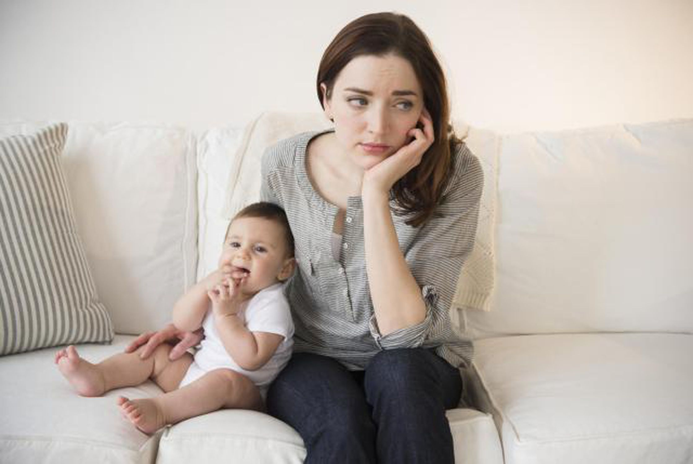
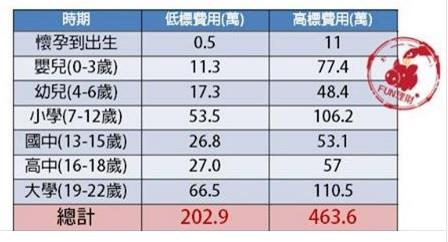

幸福感的降低
作家西尼爾（Jennifer Senior）曾在他的書中提到：孩子容易是引起夫妻的根源，「比吵金錢、工作、姻親、生活習慣、性等等都還要多，」「無法想像的人，歡迎和一位煩人的2歲孩子或臭臉的15歲孩子待一天，就會知道了。」
「有孩子會讓人不快樂」是學界的一種簡易共識，有些學者則進一步探討更複雜的層面。有研究顯示，對於某些有了孩子後的人來說，失去幸福的感受比其他族群都來得大，比如年輕或單親父母。後來發現地域也會影響幸福感。一份2016年的研究觀察共22個國家，發現生小孩的快樂程度也取決於家長所在的國家政策，是否有帶薪育嬰假和兒童托育政策。在這份研究中，挪威和匈牙利的父母比澳洲和英國的快樂，而最不快樂的則是美國——發達國家中少數沒有育嬰假者。
認知失調後的自我說服
耶魯心理學家布魯姆提出三點人們為何說服自己「不後悔生子」，實則認知失調：
一、「記憶失真」現象。「當我們回想過去經歷時，我們往往會記住巔峰，而忘記了過程中那些糟糕的日常，」 「雖然實際上我們通常更喜歡小睡片刻、購物或回覆email，而不是花時間陪孩子，但我們的記憶會欺騙自己：『沒有任何事情比和孩子在一起更開心了，』」
二、依戀現象。多數父母對於孩子皆有愛，覺得自己愛的人事物不存在自己會更快樂是很違常的。「我們對某人的依戀可以取代自身生活品質的下降，」某學者寫道。
三、生子的目的本身，或許本就不是追求幸福快樂。 「當我們說養育孩子是我做過最棒的事情時，並不是說孩子在日常生活上給予多少快樂，也不是說他們對婚姻經營有什麼好處，我們在乎的是更深層次的事情，像是滿足感、目的與意義感。」
社會心理學家鮑邁斯特（Roy Baumeister）的研究指出：人們越是投入照顧孩子，他們就越是覺得生活具有意義——即使他們回報生活過得並不「快樂」。
成為母親後的懊悔
這個社會對於母親有著成千上萬不明說的禁忌，好比「母親無法後悔成為母親」。
這些母親往往會遭遇到三大問題，要馬一旦說出自己後悔成為母親，大家卻只想轉移話題；要馬將後悔包裝在育兒笑話中，苦楚只能拐著彎說；要馬天天都在是否該讓孩子知道自己後悔生下他／她的天人交戰中打轉。

不用花一堆錢
（上圖取自小資女艾蜜莉，〈養一個孩子要花多少錢？從出生到大學畢業，一次算給你看〉）
面對生小孩一個最需要面對的現實考量，就是「錢」。如果我們今天各各都是富二代，想錢錢來，那麼生小孩的各種花用那都不是問題。想要讓孩子盡情學習各種才藝、讓孩子盡情買各種他／她想要的東西，那都不是問題。問題在於，我們都不是有錢人，生孩子並不是件說生就生的易事，若是沒錢，我們該怎麼安心將孩子平安健康地養大到他／她成年？甚至讀大學以及就讀研究所？
要是今天賺不夠錢，或是中年破產，或是被人騙走幾百萬，那麼孩子該怎麼辦？沒錢養活自己那又該怎麼辦？
這世界上不是所有問題只要靠著愛情裡兩人彼此的互相扶持和堅定，就能夠解決所有阻礙。甚至有些家庭並非雙薪或是雙親家庭。沒錢就是沒錢，沒錢就別生小孩。若是要生小孩，就要確保有足夠的金錢能夠維繫小孩子的食衣住行，且更重要的是自己。自己都養不活就別養小孩。